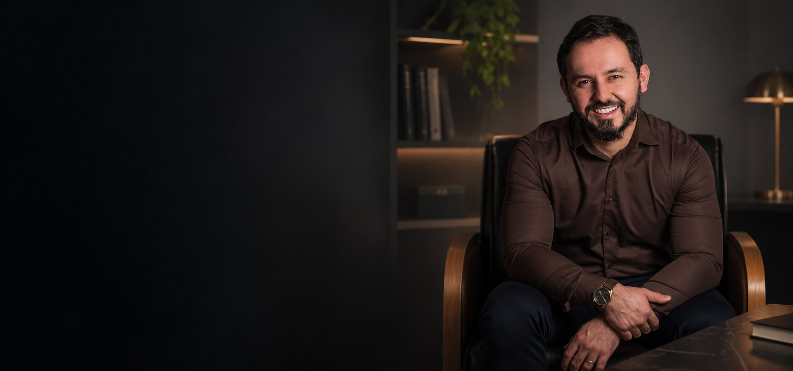
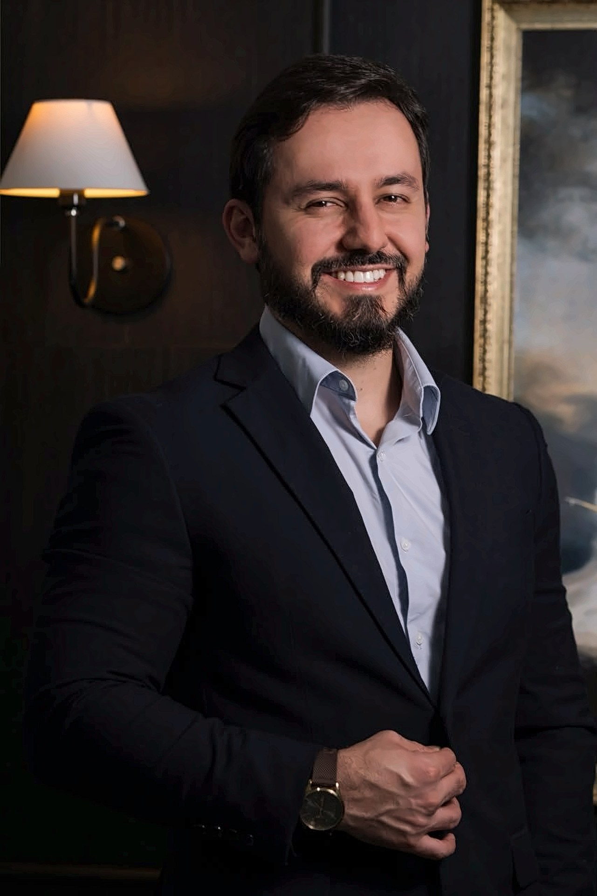

01 · Dor lombar
Uma dor que se instala na base das costas.
Pode piorar ao levantar, abaixar ou permanecer muito tempo na mesma posição.

Dr. Sávio Reis · Neurocirurgia da coluna · Pouso Alegre, MG
Quando a dor interfere no descanso, no trabalho e em gestos simples do dia, o primeiro passo é entender a causa. O Dr. Sávio Reis, neurocirurgião, avalia cada caso de forma individual. E nem todo tratamento passa por cirurgia.
5,0 · 203 avaliações no GoogleA dor no dia a dia
Para quem convive com dor nas costas, gestos simples (levantar, abaixar, brincar, dormir) viram negociações diárias. E o corpo costuma dar sinais.
Cena ilustrativa · dramatização
Sinais possíveis
Quatro manifestações que podem acompanhar problemas na coluna, como a hérnia de disco, mas não apenas ela. Nem todas as pessoas sentem todas. Só a avaliação define a causa.
01 · Dor lombar
Pode piorar ao levantar, abaixar ou permanecer muito tempo na mesma posição.
02 · Glúteo e perna
Ela pode alcançar o glúteo, a coxa, a panturrilha ou o pé, às vezes mais intensa na perna do que nas costas.
03 · Sensibilidade
Alterações de sensibilidade podem acompanhar a dor ou aparecer sozinhas, numa área específica da perna ou do pé.
04 · Força e movimento
Dificuldade para apoiar o pé, caminhar ou realizar alguns movimentos merece avaliação médica.
Reconhecer os sinais é o primeiro passo. O segundo é saber que existem possibilidades de tratamento.
Cirurgia endoscópica da coluna
Uma cirurgia minimamente invasiva, feita por uma pequena incisão, com câmera de alta definição e instrumentos que chegam até o nervo comprimido. Em pacientes selecionados, pode significar menor comprometimento dos tecidos no acesso e benefícios para a recuperação.
Quem conduz o cuidado
Dr. Sávio Reis é neurocirurgião e dedica sua prática à cirurgia endoscópica da coluna. A tecnologia é parte da história; a outra parte é saber quando usá-la e explicar cada passo com clareza.
procedimentos de cirurgia endoscópica da coluna
Em validaçãoatuação pioneira na introdução da técnica em Minas Gerais
Em validaçãoavaliação individualizada, caso a caso, antes de qualquer indicação
Relato da equipe · em validaçãoExperiência com pacientes de diferentes idades e graus de complexidade.

Comparação entre técnicas
Duas formas de chegar ao mesmo nervo. Compare característica por característica, sabendo que cada técnica tem as suas indicações.
Possível benefício em casos selecionados
01 · Incisão
Comparação entre técnicas, não entre resultados. Internação, recuperação, retorno às atividades e eventuais restrições de movimento são definidos caso a caso. Infecção, sangramento, lesão neural, fístula liquórica e recidiva são riscos possíveis nas duas abordagens. Conteúdo a validar com o Dr. Sávio
O método
Etapa por etapa, do disco intervertebral à recuperação.
01 / 07 · Anatomia
Um amortecedor entre as vértebras: núcleo gelatinoso envolvido pelo ânulo fibroso.
02 / 07 · Hérnia
Parte do núcleo atravessa o ânulo e pode comprimir uma raiz nervosa.
03 / 07 · Indicação
Muitas hérnias melhoram sem cirurgia. A indicação é sempre individual.
04 / 07 · Acesso
Por uma pequena incisão, a cânula guiada por imagem chega ao local da compressão.
05 / 07 · Visualização
O endoscópio amplia a imagem num monitor, com irrigação contínua de soro.
06 / 07 · Descompressão
Instrumentos delicados removem o fragmento que comprime o nervo.
07 / 07 · Depois
Alta e recuperação são individuais, com acompanhamento em cada etapa.
Avaliações de pacientes
“A primeira vez que fui tão bem atendida por um médico e sua equipe.”
“Realizei esse procedimento e graças a Deus e ao doutor estou livre de dor.”
“Profissional com excelência no atendimento e foco em resolução do problema.”
Trechos de avaliações públicas no Google · Resultados variam de pessoa para pessoa
Relatos de pacientes
Experiências contadas por quem passou pelo cuidado do Dr. Sávio, nas palavras de cada paciente, sem cortes.
Prévia de composição · textos fictícios, a substituir por relatos reais autorizados
Atendimento e acompanhamento
Saber o que esperar reduz a incerteza. Cada etapa é conduzida com explicações claras e tempo para as suas perguntas.
O primeiro contato é feito com a equipe. Na consulta, o Dr. Sávio escuta a sua história e examina você com atenção.
Os sintomas e os exames de imagem são analisados em conjunto, para entender a causa da dor.
As opções são discutidas com clareza, incluindo as não cirúrgicas. A decisão é tomada com você.
Quando há indicação de procedimento, você recebe orientações de preparo detalhadas e um canal para dúvidas.
Retornos programados e orientações de recuperação, ajustadas à evolução de cada pessoa.
Pantufas com o nome, flores e um cartão na alta. Ninguém atravessa esse processo sozinho.
Detalhes simples, que fazem parte da experiência cirúrgica e traduzem uma filosofia: tratar a coluna sem esquecer a pessoa.
Os lugares do cuidado
Consultório, centro cirúrgico, equipamentos e momentos de atendimento. Arraste para navegar.
Espaços reservados para fotos. Serão substituídas pelo material fotográfico e audiovisual do consultório e do centro cirúrgico. Pela Resolução CFM nº 2.336/2023, a filmagem de procedimentos por terceiros é vedada. Vídeos de cirurgia exigem avaliação antes da publicação.
Perguntas frequentes
Respostas gerais para dúvidas comuns. Elas não substituem a consulta: cada caso precisa ser avaliado individualmente.
Agendar uma avaliação
Se a dor na coluna está interferindo na sua rotina, uma avaliação ajuda a entender a causa e as possibilidades de tratamento. A equipe orienta sobre agenda, documentos e exames para a consulta.
A agenda pode ter tempo de espera. Este site tem caráter informativo e não substitui a consulta médica.